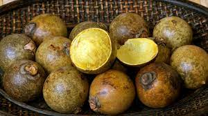
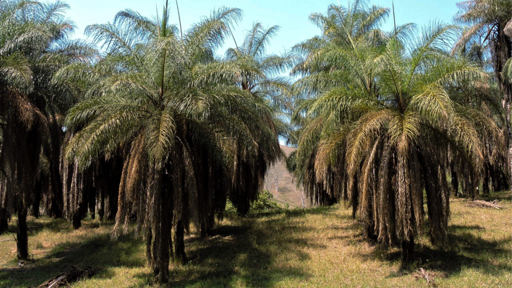
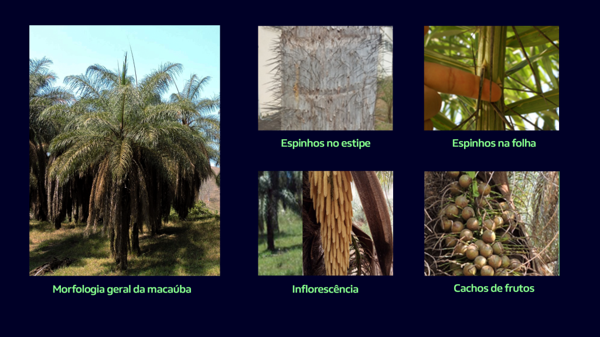
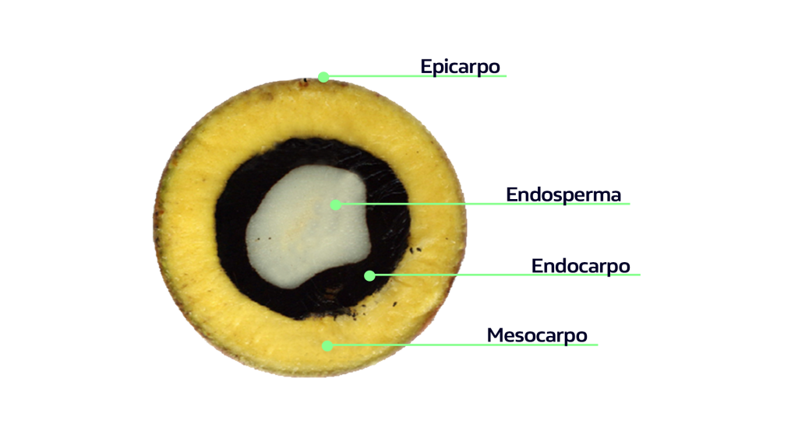
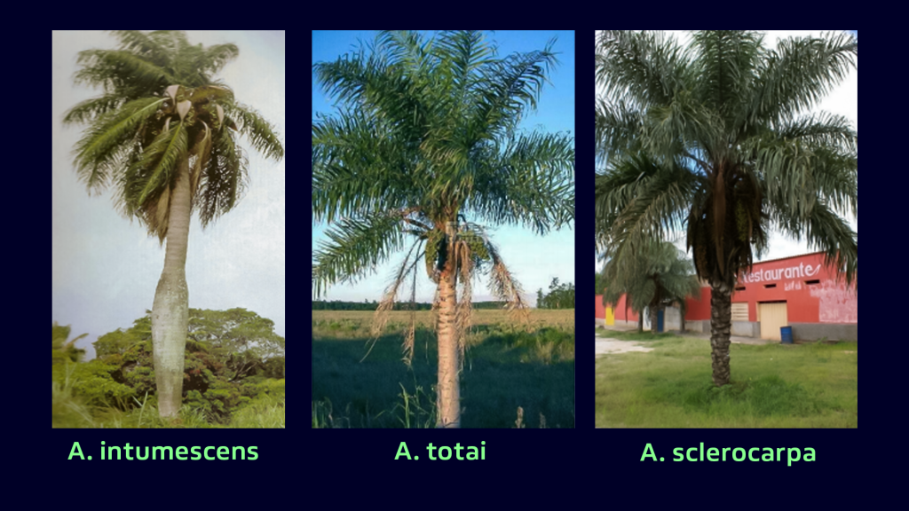

Macaúba ou Macaíba
As mudanças climáticas registradas nos últimos anos tem refletido sobre a agricultura. O setor agrícola tem sido pressionado devido ao aumento na demanda por alimentos e por fonte de energias renováveis. Nesse sentido, plantas como a macaúba , espécie nativa brasileira, surgem como uma aposta certeira.
Sobretudo porque são culturas oleíferas, que atendem tanto o setor energético a partir da extração de óleo para fabricação de biodiesel quanto os setores agrícola e alimentício.
Com base nesse cenário, o Brasil desponta como um dos países de maior potencial para liderar a agricultura energética no mundo, devido a sua flora diversificada. Entre as espécies de palmeiras nativas, a macaúba (Acrocomia aculeata).
Quer conhecer mais sobre esta planta e para o que ela serve? Então continue a leitura e descubra todo o potencial alimentício, pecuário e energético da macaúba.
O que é a macaúba?
A macaúba possui várias denominações populares, que variam de acordo com a região de distribuição da espécie, como: mbocayá (Argentina); totaí (Bolívia), corozo (Colômbia, Venezuela); tamaco (Colômbia); coyol (Costa Rica, Honduras, México); bocaiúva, chiclete-de-baiano, coco-baboso, coco-de-catarro, coco-de-espinho, macacaúba, macaíba, macaibeira, macajuba, macaúba, macaúva, mucaia, mucajá e mucajaba (Brasil).
Ela apresenta, boa adaptabilidade a condições mais extremas, como baixa precipitação e solos de baixa a média fertilidade – características importantes para enquadrar o seu cultivo em áreas marginais e não competir com a agricultura de alimentos.
Seu principal produto são os frutos com elevado teor de óleo e de amplo espectro de uso, como: biodiesel, setor alimentício, fármacos, cosméticos, lubrificantes entre outros. Além disso, a macaúba tem importância sócio-ambiental, com potencial para compor Sistema Agrossilvipastoril e recuperação de áreas degradadas.
Até pouco tempo, a planta era explorada exclusivamente no sistema extrativista, sendo utilizada principalmente para produção de sabão. Entretanto, sua domesticação tem andado a passos largos e impulsionada por instituições públicas e privadas, através de pesquisas e instalação de cultivos comerciais.
Onde encontramos a macaúba?
A macaúba é distribuída desde a América Central até o sul da América do Sul, com ocorrência nas savanas (cerrados) e florestas abertas da América Tropical.
No Brasil, é considerada uma das palmeiras de maior dispersão, sendo encontrada em praticamente todas as regiões do país. Os estados que apresentam maior concentração são: Minas Gerais, Goiás, Mato Grosso do Sul, Mato Grosso, Piauí, Tocantins e Ceará.
É denominada como uma palmeira rústica de grande adaptabilidade a diferentes condições de clima e solo, sendo que as populações naturais ocorrem principalmente em áreas de vegetação aberta com alta incidência de luz solar e solo de textura média.
Como identificar a macaúba?
A palmeira
A macaúba é uma palmeira arbórea que pode atingir até 20 m de altura. Apresenta estipe único recoberto por espinhos e uma copa com aspecto plumoso. Uma palmeira adulta apresenta em média de 20 a 25 folhas, com comprimento que varia de 2,5 a 3,0 m, apresentando espinhos ao longo da ráquis.
Suas inflorescências, que contém flores femininas e masculinas, são emitidas entre as folhas como longas espatas, que quando maduras, abrem-se expondo a ráquis floral, especialmente durante a estação chuvosa. Geralmente são emitidos em média quatro cachos por planta com dimensões de 80 a 130 cm e que podem produzir até 500 frutos.
O fruto
Os frutos de macaúba são globosos com tamanho variando entre 2,0 e 3,5 cm. Possuem casca (epicarpo) de cor verde nos estádios iniciais de desenvolvimento passando a coloração amarela ou castanha quando maduro.
A polpa (mesocarpo) é fibrosa e mucilaginosa de coloração amarela, que recobre o endocarpo de cor preta, lenhoso, rígido, que protege a amêndoa oleaginosa de cor branca, recoberta por membrana escura e pouco espessa.
É exatamente da parte polposa e da amêndoa que se retiram os principais produtos da macaúba: os óleos para produção de biodiesel, cosméticos e alimentícios.
Verdadeira morfológia
Por se tratar de uma espécie com ampla distribuição geográfica em regiões com diferentes características edafoclimáticas (clima, relevo, umidade e outras condições climáticas distintas), a macaúba apresenta grande variabilidade morfológica. No Brasil, há consenso de que há pelo menos três populações distintas de macaúba:
- Acrocomia intumescens: são de maior porte e com dilatação no seu estipe;
- Acrocomia totai: apresentam menos espinhos;
- Acrocomia sclerocarpa: possui mais espinhos, frutos maiores e maior teor de óleo, esta última, aliás, ocorre principalmente no estado de Minas Gerais.